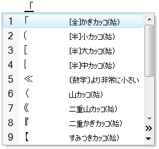

关于输入法（一）［2007-11-11］
今天终于决定了，在机器上的中文输入法只保留谷歌拼音。
做出这个决定本身一点也不痛苦，当断不断，反受其乱。
毕竟输入法属于耐用品，保留最适合自己的一个就足够，攒一大堆没有任何意义。
下面想聊聊这些年来中文（拼音）输入的一点心得。
老了，先怀旧吧。
接触到的最早的中文系统是传说中的吴晓军2.13，但是可能是年代久远的缘故，现在几乎没有印象了。这么说可能不太公平，因为咱只是想不起任何吴晓军2.13所独有的特征而已。而实际上，作为PC中文系统的鼻祖，其风格深深的影响了后起的一群中文系统。
作为前Windows时代的收山之作，也是至今仍在某些传统业务中发挥效力的UCDOS+WPS，占据了咱对于DOS时代绝大部分的回忆。勉强联想的话，就像如今在Windows上开一个命令行窗口，按Ctrl+Space调出输入法，然后直接打字的感觉。
当时切换输入法使用Alt+数字键，可选项林林总总一大堆。专业人士为了特殊需要，会用五笔、区位、邮码、四角等。除了系统自带的输入法之外，市面上流通的输入法也不是少数。在那个万码奔腾的时期，好奇心强烈一点或者喜欢赶时髦又动手能力较强的朋友，就会面对十个数字键不够分配的情况。
只不过，称得上面对普通用户提供的输入法，只有全拼一种，即便是半文盲也会用。这都是托了土共推广普通话，普及义务教育，统一传授汉语拼音的福啊！
稍微熟练一点且对于现状不满意的非专业打字员，会经过简单的自学而采用双拼。但双拼方案又不止一种，至少UCDOS的那一种并不算是最优秀的。最优秀，或者说目前应用最普遍的双拼方案是自然码的设计，微软拼音的双拼方案也采用了这一种。
而咱自己，只用全拼。一来，当时并没有用计算机处理大量文本，最多是玩玩而已，还没有意识到打字速度的重要性。二来，咱很懒，不愿意花费时间学习任何自己看来“多余”的内容，就连双拼都不学。
中文DOS的全拼，并不像现在的拼音输入法这么方便，基本上还是以词为单位变换。考虑到内存原因，词库也不算大。想想当时连汉字的点阵都需要插上一块“汉卡”来处理，就不必对于输入法的不便之处有什么怨念了。
Windows 3.x几乎没怎么用过。而这一阶段就是讲汉语的同行们对Hook大感兴趣的时期，中文之星等外挂平台之所以在Windows 3.2出来后还在流行的主要原因，就是速度。因为英文3.11+中文之星比中文3.2要快得多。
问题是，即便如此，也仍然不如UCDOS方便。本来3.x就是一个DOS上的大号应用程序，先天就不足，到如今看来，除了微软之外，似乎还没谁开发过仅for Windows 3.x并且不for DOS的程序。那时候DOS版WPS、CCED仍然对于Windows版Word、Excel保持全胜。
再往后，就是Windows 95/98，中文处理方式有了大变化。下面的事情各位都耳熟能详：Windows + Office垄断市场，各种DOS搭档组合都销声匿迹了。这时候中文已经从底层获得了支持，不需要外挂或独立的汉字系统。最关键的是，系统提供的输入法也足够满足普通用户的需要了，虽然Ctrl+Space的切换方式怪了一点。
为了尽可能满足原来用户的需要，微软提供了微软版的全拼、双拼、区位，后来还有五笔的86版和98版，基本上覆盖了中文DOS所提供的全部中文处理功能。除此之外，另有智能ABC、郑码、表形码。
禁受了万码奔腾年代的广告轰炸，咱已经对于各种形码彻底无视了，只打算用不需要学习的音码。在比较了全拼和智能ABC之后，选择了智能ABC。基本上为全拼式输入的基础上，可以享受一些v1-9键特殊符号之类的额外服务。当然，咱知道有笔形辅助码筛重字的功能，但是从来也没用过。
有点奇怪的是，不知道是否借鉴日语输入法，智能ABC利用Caps Lock键切换中英文状态。但是，日语键盘的布局上，Caps Lock在上档的位置，需要同时按Shift才会锁定大写，仅仅按一下的话，是切换到“英数”。但是“简体中文—美式键盘”可不是这样，所以在智能ABC中按键换成英文，就必定是大写。用了没多久，就宁可采用打开/关闭输入法的方式切换，也不愿意按住Shift来写一整句正常的，以小写拉丁字母为主的英文。
不久以后，随着Office，“微软拼音”也渐渐的流行起来，并且一直流行到现在。微软拼音本来是从哈工大收购，最大的特点就是“整句输入”：中文、字母、标点（逗号例外）混合输入。至于加音调，不能算是特点，当作辅助码就好了。
感觉这个引擎似乎应该是个专家系统，通过分析语法，当然主要还是以概率方式选词保证了第一遍输入的准确率。句子越长、文风越规范，判断就越准确。试用的时候发现，如果是一些没有新词的套话，比如公文啥的，可以达到近乎百分之百的准确率。尤其是对于权力/权利之类发音相同、意思相近、甚至连使用语境都相似的词汇，处理很恰当。
所以，咱又一次喜新厌旧了，从智能ABC转换到了微软拼音。由于以前养成的“良好”习惯（尽量不用那些每个输入法特有的“便利”功能），唯一需要咱适应的是记住空格键仅仅变换而已，回车键才能上屏。相比之下，改用Shift键切换中英文状态的功能倒没有多麻烦——反正咱也不用。
到此为止，在开始使用Windows 2000以前，咱以Free Will作出的选择已经定型：微软拼音。这时候市面上虽然也有许多第三方输入法，也曾经试用过，但效果都不太令人满意。比如那个平均一刻钟崩溃一次的紫光拼音；比如光安装就需要几百兆空间的智能狂拼——那时候咱唯一的一块昆腾硬盘还只有3.2GB。
2007 年11 月11 日
关于输入法（二）［2007-11-17］
然后就是好几年的“战略相持”阶段。
第一次用Windows 2000，就是日语版，这也是第一次使用真正的日语系统。总的感觉……大开眼界，以前使用南极星外挂玩日文游戏时好学深思而积攒下来的诸多疑问一个个迎刃而解。
当然，本文这里还是集中精力于输入法上。
乍一看，最深刻的印象，就是日语Windows自打启动开始就处在微软日语IME输入法的状态中。作为对比，中文的Windows默认的状态是“中文（简体）—美式键盘”，需要输入法的时候用Ctrl+Space切换。
这时候还没有“高级文字服务”，都是“输入法指示器”形式的状态条。微软日语IME的状态条可以最小化为任务栏通知区的一个图标。通常情况下是一个半角的“A”，这时候敲键盘，没什么不习惯，都是字母数字。既然是输入法状态条，自然可以用鼠标点一点，换其他状态。玩了几分钟发现，可以变成全角“あ”、“ア”或者半角的“ア”。
继续，输入法是带帮助文件的，可惜当时看不懂日文，没有深究。后来嫌麻烦，直接把默认键盘布局换成“英语—美国”。
作为工作用机，平时自然免不了写点邮件、编点文档，中文输入法当然也必不可少。这时候就发现，只能安装微软提供的那些输入法。也只有安装了那些才能正常执行。其他的市面上能找到的，要么就是在安装过程中伴随当的一响出现一个乱码的系统错误对话框然后退出；要么就是忍受一个乱码状态条下变换成乱码，然后发现上屏的也是乱码。
这些都不是问题，毕竟咱习惯了微软拼音。而同事们基本上也是如此，甚至还有用惯全拼或智能ABC的，并且还没有咱这么大的好奇心去一一试用其他输入法。总之，对于工作没有任何影响。我想，这就是为什么无数公司都起诉微软的“绑定”行为的原因了吧。但是话说回来，如果他们做的足够好，也不会让用户连试用一下的心情都没有。
与咱同龄的程序员，恐怕还没有一个号称自己从未把系统搞崩溃过。在Windows 98时代，这是很没面子的事【^_^】。平心而论，Windows 2000确实稳定多了，正常使用可以说几乎绝不会蓝屏死机。但是，架不住咱这样的好奇心和耐心都过剩的C/C++程序员胡闹。总之……大约一个月后，系统终于彻底完蛋。
重装并不困难，虽然不懂日语，但仍然可以猜着一路往下走。唯一和安装中文英文系统不一样的是，有一步要求用户选择键盘类型：按【全角/半角】键表示日语106键盘；按空格表示美式101键盘。这时候咱才第一次意识到日本人用的键盘似乎和中美邪恶轴心不太一样。以前也见过老板带回来的日语笔记本，但是从来没有注意键盘，或者说注意过但忘了。
插一句，似乎很多美国人认为世界只有美国；而似乎更多的国人在潜意识中都以为所谓“外国”就是美国。在听到说人民币“对内贬值对外升值”之类言论的同时，很少有人意识到“外”面还有不少人用“欧元”。虽然咱在国际关系方面没有这种错误认识，但那是由于新闻看多了耳濡目染的缘故。对于计算机，本来就是美国人搞出来的一水儿美国标准，在学生时代没有见过任何例外。
上班之后对当学生时候的最大感慨就是，太“崇美”了。无论系统、应用程序，只要有英文版必定上英文版，没有的情况下才勉为其难的装个中文版。该写字的地方，几乎都是英文，实在想不起来词，宁可用拼音！可能是因为学校里面相处的人都是这个样子罢，并没有感到任何不和谐之处。其后果便是，在工作中花了不少时间才把这种思维惯式扳过来，意识到了购买软件仅仅是工作需要的普通用户们并非那么喜欢看满屏鸟语的，虽然他们并不是不懂。
回到重装系统的话题上……国内键盘都是美式101，所以选了，下面一切正常。
这次就对稍微留意了一下。另外，既然日语系统上能装微软的中文输入法，那么反过来，中文系统自然可以装微软日语输入法了。于是在一台中文Windows 2000的非开发用机上实验，成功了，并且这时候输入法的帮助文件不是日语而是英语。
帮助里面说，切换状态用【全角/半角】，键盘左上角的那一个。而英文键盘下Alt+`，就是反撇号，也是键盘左上角的那一个。OK，知道了。但是其他三个，【変換】【無変換】【ひらがな/カタカナ】就不知所云了，不过帮助上面的指出的用途看似无关紧要。然后咱在没学日语的情况下通过输入法的帮助文件学会了输入假名，毕竟简单。
对于日语输入法的好奇心到此为止，对于中文输入法的选择也没有变化，仍然是微软拼音，并且很高兴这个东西随着微软一次次的升级而变得越来越强大了。
2007 年11 月17 日
关于输入法（三）［2007-11-18］
后来，去了日本待了两年，这时候系统已经进化成了日文Windows XP，并且终于用上了日语键盘，体会到了这种键盘是个什么样。不得不说一句废话，日语键盘确实适合输入日语。
现在明白了为啥启动时候就是输入法状态了，因为所有的按键都将由输入法处理，通过【全角/半角】一个键就可以方便的切换。半角英数状态下，所有按键无障碍的跳过输入法处理而上交系统，和关闭输入法的时候没有区别。
实际上高级文字服务的设置中，选择语言只能筛选可添加的“输入法”；在下拉列表中，所有“键盘布局”还是都挂着的。可以找到一个日文键盘布局，试一试就会发现，那些额外的变换键不起任何作用。归根到底，“键盘布局”只是一个硬件扫描码到虚拟键值的映射方式。Windows系统本身没有响应各个文化所需要的功能键的设定，日本人想要方便，就得在输入法里面加点料。于是乎，输入法总是打开的，想方便就关不得。
另外一点感受就是，理解了为啥切换状态键要命名为【全角/半角】。和中文不一样，日文由于有了半角片假名，是可以和半角英数字混合使用的。传统的全角假名状态下，就连字母和数字都是全角。作为对照，中文处理中，标点有中英文和全半角两个选项四种组合。这一点从2.13时代就固定下来。
说实话，直到现在咱还是认为中文处理的方式更合理一些，毕竟本来字母数字就是半角，使用它们用以较长内容的情况多半是引用原文。而原文自然是半角，硬要增肥难看的很。但是，用了几年日语Widows环境之后，感觉有些动摇。
所谓“全角”、“半角”，本来就是字符界面下，使用等宽字体时处理的术语。终端环境下的字体都是等宽字体，适合系统处理和屏幕显示，但是看上去不爽。这里的“不爽”估计咱们可能没啥感觉，因为中文字体都是等宽的。即便是这次微软花大钱专为屏幕显示而弄的雅黑和正黑，其中的方块字也都是等宽。
西方文字用的是宽度不等的拉丁字母，而日文除了方块字之外还有尺寸往往撑不起一个方块的假名。即便是中文系统，只要装了Office，估计也能找到“MS Gothic/PGothic”和“MS Mincho/PMincho”这两套日文字体。有没有P的区别，就是在于对字母与假名的处理上：没有P的是等宽字体，半角宽度严格的是全角的一半。系统界面和通常的应用程序（代表是Excel），使用的是有P的那一套。（严格说，界面字体是MS
UI Gothic，其中的假名和英数字比PGothic还要窄）
在不等宽字体下，全角英数字的模样看上去并不像增肥那样难看。也许这就是日本人事实上把全角和半角分别默认为“和文”与“西文”输入环境的原因吧。
当然，这时候的中文输入还是老一套：微软拼音。并且随着升级到了2003版，用着更顺手了。很多时候，比如写文档，在中英文混合内容的输入上，往往第一遍就没有错别字，不需要改。后来甚至懒到不去看输入的内容，等到最后检查的时候再修改。
遗憾也是有的，比如“很遗憾没把以前积累的个人词库保留下来”等等。
郁闷也是有的，就是键盘布局不对付。
对比日文和美国英语键盘，字母和数字的位置一模一样，差别只在符号的安排上。由于微软拼音用的仍然是美国英语的布局，开始的时候总是按着Shift把字母以外的键按一遍，挑个正确的留下。后来……慢慢的就把美国英语键盘布局背下来了。
这样下去总不是个事儿，还是争取一劳永逸比较好。
现在是Windows XP时代，再装一遍是需要激活的。为了不给微软工作人员打电话解释原因，修改系统需要一个时间短且比较稳妥的方案。不能再像当年那样，动不动就一个“注入”，还经常使用SoftIce等“道具”，美其名曰“就着亮儿研究一下你的结构”（王小波）。
搜了一下相关开发资料，发现输入法在开发当中并没有任何绑定某种键盘布局的迹象，自然最终做成的那个*.IME 文件肯定和键盘布局是分离的，通过某种联系挂上而已。这使得修改配置达到目的的方式变得可能。
在注册表的HKEY_LOCAL_MACHINE\SYSTEM\CurrentControlSet\Control\Keyboard Layouts 下，放着当前用户所（能）使用的键盘布局的列表。编号都是八位十六进制数字，用0000开头的是一种文化的“基本”（微软定义的基本）键盘布局。
微软教导我们说，键盘布局可以扩展。比如希腊语，基本键盘布局编号0000408 ，除此之外足足有六个扩展。即便是美国英语，除了作为00000409 的Qwerty布局之外，还有国际键盘、Dvorak、右撇子Dvorak、左撇子Dvorak四种扩展。
微软还教导我们说，输入法也算作是键盘布局的扩展，列表最下面用“E”开头的那些，都是各种（东亚）语言的输入法。具体编号在每台机器上未必一样，因为输入法是可以随便安装卸载的，反正编号会自动增长。
找到“微软拼音”，发现Layout File 一项里面明明白白的填着kbdus.dll ，看来就是这儿了。改成日语输入法用的那个kdbjpn.dll ，重新启动。
发现，成功了……一半。
在有些地方，比如MSN窗口里面，确实改过来了，输入的符号键和键帽上画的一样。但是有些地方，比如Word里面，仍然是顽强的美式布局。
索性把00000804 也给改了，Layout File 变成kbdjpn.dll ，Layout Text 变成中文（简体）- 日式键盘 ，再次重启。
这次好了，在所有的场合，微软拼音都使用日语键盘布局了。这意味着可以直接按下画着“^ ”的那个键输入省略号了。
这意味着什么？微软拼音内部在有些场合会使用相对应的基本布局？
在XP时代实在没有兴趣和胆量玩什么“注入”了，就这么用下去，很久都没有再操心过输入法的事。
2007 年11 月18 日
关于输入法（四）［2007-11-24］
一直到了2007年年初，发现谷歌也开始做输入法，于是百度了一下相关内容。
很逗吧，但是没办法，日文Google上面相关内容极少，而中文Google已经变成“谷歌”了。可以想象一个场面：Google在大陆开了个分矿，派来个SCV修基地。正在高高兴兴采矿的时候，跑来几只狗一顿乱啃，眼瞅着就没戏了。说时迟那时快，天上飞来个和谐的金包皮，“呸”的一口×液下去。救倒是救过来了，不过从今往后改名谷歌，只能出炸弹人了……
百度有和谐的快照，而谷歌（不是Google）没有，查看一些老网页和慢网站比较恰当。尤其是对于伟光正照耀不到的地方的我等生活在水深火热里面的家伙来说，访问国内网站的速度几乎是第一选择。
自从万码奔腾时代之后，又一轮输入法热潮开始了，这回是清一色的拼音输入法。一直坚持做拼音输入法的有很多家，但是一直都默默无闻，没有太大动静。这一次，居然是从未涉及这一领域的搜狗开始大张旗鼓的宣传，咱注意到谷歌输入法的时候，搜狗2.0正式版已经推出了，正在“热火朝天”（搜狗论坛语）的开发3.0。
搜狗2.0装了，发现是乱码，卸载，重新启动。
搜狗3.0Beta1装了，发现还是乱码，卸载，重新启动。
相反，谷歌拼音装上的时候没有感觉，好像自然而然就能用了。现在对比之下才注意到，谷歌拼音是Unicode程序。很好，很强大，很和谐。
（孔）子曰：己所不欲勿施于人。
（范）子曰：甚矣，吾衰也！久矣，吾不复瞅见乱码。
不说中日之间，哪怕是内地和港澳台交流，文字编码问题就回避不了。很久以前就开始有许多转码工具，在游戏爱好者和文学爱好者之间流行。但那是上个世纪……
内地为啥Windows千禧版很快下架了？因为不支持那个GB18030标准。后果就是，使用NT的Unicode内核Windows 2000/XP一统天下。理论上，没有针对特殊要求（比如向后兼容客户的老机器）的Windows开发都应该是Unicode了，因为本地编码在NT上照样先翻译成Unicode之后再执行。坚持老一套，写代码的未必轻松，用程序的则麻烦不少，这不是个全局最优解。
第一感觉就是如此，很长时间都没有扭转过来。极端点说，只对应“簡体字中国語版Windows”的输入法，应该叫做“中国输入法”而不是“中文输入法”，当然，也许对岸蓝营朋友们会称之为“中共输入法”。还是老问题，想要和微软竞争的产品，其水准至少也要和微软看齐。让用户根本没有试用可能性的东西，自然会慢慢淡出视线。
不是吹毛求疵，因为用中文当母语的用户为数不少都在使用其他语种的Windows，不管他们了吗？暂时没关系，反正微软管了。话说回来，如果做到这一点成本很高的话，咱也不会苛求，毕竟杀头的生意有人干，赔本的买卖没人做。但是，仅仅需要采用Unicode开发而已，业界同行们肯定能理解这样的“代价”简直微乎其微。况且微软早就号召过了不是？高举紧跟就那么麻烦么？
顺便扯一句，金山在WPS节节败退的时候，开发了能处理国内少数民族语文（藏、维、蒙古、彝）的特别版本，弥补了一大块空白。而微软方面直到Windows XP和Office 2003还不支持这些语种。相信政府采购，或干脆就是行政指令，是金山这个决策的动力。成本很大，但是肯定也赚了呀。不过，Windows
Vista和Office 2007也跟进扩展了支持语种的数量，这下WPS的日子又不好过了。【^o^】
扯回来，使用谷歌拼音的时候，觉得聊天很轻松。许多新鲜词汇微软拼音并没有收录，写文档的时候几乎没有影响，但是普通的谈话场合，需要选字的时候很多。于是乎，正式资料用微软拼音，平时用谷歌拼音。
但是，谷歌拼音仍然是传统的词组输入，空格键直接上屏，这让已经习惯了微软拼音的我反过来适应了一段时间。不过，随着使用谷歌拼音的场合越来越多，慢慢的又恢复到了不习惯微软拼音的地步。
出自对于拼音输入法的关心，开始大量浏览国内各个IT信息网站。（以前几乎不看）
有几天显著的头条都是：谷歌拼音词库涉嫌抄袭搜狗拼音。
弄清来龙去脉之后，相信观众对事实已经没什么异议了。对于搜狗号称法律上可能采取的措施，相信也是大事化小小事化了——因为这事在法律上确实不太容易发飙。
谷歌声称输入法是包括实习生在内的几个人在业余时间做的，据打听的确如此。Google有个惯例，员工可以有20%的自由支配时间，想必这一招被谷歌继承了下来。必须承认，这一招很有效，极大地调动了员工的积极性。以至于在传说中似乎除了搜索之外，Google没什么产品不是在那20%时间里开发，至少也是开始开发的。
不管怎么说，这个抄袭事件引发了大量对比输入法的口水战。咱没掺合，因为当时的搜狗拼音不是Unicode而没有用过，自然对于那些所谓胜过谷歌拼音的功能没有任何概念。光看支持者的架势倒是胜过谷歌拼音一筹。
然后夏历年之前回国，看了没有一个【民族和谐马赛克】和【民族和谐干扰音】的和谐晚会。继续隔三岔五用谷歌拼音和人在论坛上吵架。
就这样一直到了七月份，搜狗推出了3.0的Beta2，据说是Unicode，才再一次吸引了咱的注意力。装上，发现不是乱码，没有卸载，决定慢慢试用。
同时，抱着货比三家的心态，也试用了其他拼音输入法。
拼音加加沉寂了几年之后恢复了更新，目前是4.x，也是Unicode了——可以放心使用。
紫光拼音不知道改善了崩溃毛病没有，反正最新的V6仍然是乱码——当然不用。
直到10月份，搜狗才推出3.0正式版。但是作为主要竞争对手的谷歌拼音很久没更新了。我打算等到谷歌再出一个新版，然后对比才算公平。
2007 年11 月24 日
关于输入法（五）｛2007-11-25｝
千呼万唤始出来，谷歌拼音1.0.23.40发布了。理论上这还是“测试版”，不过了解20%规矩的朋友们应该明白，官方没有表态支持（也就是拿进80%时间里开发）的Google产品，永远都是测试版。
下面谈谈对于输入法各自特点的感想，主要是拼音加加、谷歌拼音、搜狗拼音、以及拿来对比的微软拼音2003，微软日文IME2003和ATOK2006。
先说拼音加加。有许多同事都在用，并且评价很高。
感觉这个输入法确实规规矩矩，有意义的设置项也比较多。就是词库似乎陈旧了一些，让被惯坏的咱稍微有点不适应。没有网络同步功能很遗憾，但是应该考虑到具体情况：加加的团队没有免费邮箱服务，是否有足够强劲的服务器还不一定；而目前大部分人还是在大部分时间只用一台电脑，尤其是笔记本用户。
最大的亮点是分组自定义特殊符号，比如圆圈数字，这对于中文用户吸引力很大。而在常用日语输入法（尤其是ATOK）的朋友看来就很正常了。【^o^】
再说搜狗拼音。
第一印象差不多已经扭转过来了，在使用的过程中，随着搜狗和谷歌的交替更新，对于选词准确率上面的感受也是交替改变——这才是竞争。在这一点上，平分秋色。
搜狗的特点确实不少，尤其是脚本式插入日期时间，变化数字等等。这对于中文用户吸引力很大。而在常用日语输入法（尤其是ATOK）的朋友看来就很正常了。【^o^】
细胞词库的使用，也算是一个亮点。但是看起来似乎把希望寄托于广大使用者身上，官方的词库都是股票名称和诗词名句之类，对于地名和专业词汇一点涉及都没有，而恰恰这些才是主要的扩展词库。
可能是和预算有关吧，对比之下，微软拼音附带的专业词库很多，在现有硬件条件下完全可以全部打开而不影响性能。遗憾的是，即便是微软拼音也仍然没有地名词库，许多场合下还是要一个个的选字。
分门别类的词库，这对于中文用户吸引力很大。而在常用日语输入法（尤其是ATOK）的朋友看来就很正常了。【^o^】
最后是谷歌拼音。
很遗憾，没啥独有的特点……差不多全部的功能都被搜狗拼音一一对应着实现了。这就是官方支持和业余开发的不同呀！
再看看日语输入法对应于这些的功能吧。
变换方面没有什么好对比的，毕竟日语在拉丁字母和正式的带汉字的词组之间还有一个假名层。只要没打错，哪怕不做变换也属于正常。所以这个只能在日语输入法之间对比：ATOK大胜微软IME——共识。装了日语输入法的朋友可以看看设置页，无论哪一种，对于变换的设定都详细得变态，以至于连日本人都懒得设置：相信开发商的默认设定，拿来直接用就好了。而ATOK还额外提供了方言变换的模式，这也是由于日语方言之间差别不大的缘故。咱一般都是开着“關西”的模式而不是一般，因为咱是从不会日语的状态过去，在大阪落地，在京都呆了大半年，后来哪怕去其他地方溜达，仍然觉得关西话顺耳。
词库方面，微软IME日语版（同行们可以去看MSDN，IME的API有专门的日语版，对应了独有的一些特性）就分成了一般、人名/地名、聊天专用三种输入状态，各自有不同的词库。这个很好理解，因为日语名称发音繁多复杂并且没有规律，在一般模式下要想打出正确的汉字几乎不可能。
而ATOK更是将词库做到了极致，三种状态使用的词库可以随便换。实际上ATOK的网站上推出了许多额外的“変換辞書”供用户购买或自由下载，即便是默认提供的那些，也足够了。这样一来，咱就可以在标准输入模式下加入几乎所有需要的词库（太多了不能全部添加），不用变换模式也可以随意打字了。当然，和“顔文字”相关的词库就算了，还是让它们呆在聊天模式下吧。
而特殊符号也是用词库方式实现的。微软拼音是内置，打出“maru”就会出现“○”等等。对于ATOK，则是专门的“記号辞書”，里面内容更是丰富多彩，基本上日语能说出来的符号名称，只要打出来就能变换出来。甚至包括希腊字母和音乐符号。
圆圈数字和标点符号是另外一回事，待会儿再说
下面谈谈共性，看看几个输入法的表现。
首先是英文状态，不约而同，三种输入法都是用“v”键引导。这个功能主要是为了针对使用美式键盘切换中英文不方便的问题。
其中，拼音加加可以允许出现空格，也就是说，一个v能引导一句英文，不至于在打字的时候，一个“I am a boy”都要额外打出四个v来。
遗憾，谷歌拼音的新版这里有个大Bug，在输入某些单词的时候，会导致宿主程序崩溃。哪怕是主页上用来做例子的那个“vele”也是如此。各位可以打开一个记事本在里面试验一下，千万不要在用Word正码字的时候实验，这个可是会随着输入法一起崩的。原因呢～～肯定是某个指针歪了呗……错误很容易定位，但是如果涉及到选字算法，估计不太好改。
其次是网络同步，对于使用多台计算机的用户确实方便了许多。
谷歌拼音当然绑定的是Gmail，搜狗拼音绑定了搜狗G邮箱，拼音加加没有。
相比谷歌拼音单一的合并同步方式，搜狗把同步分成了上传下载，这一点对于放弃由于误操作造成的一些不想保留的用户词汇和配置很有必要。谷歌拼音用户往往抱怨，明明本地已经把一些烂词删掉了，结果一同步又回来了。
但是搜狗也有它的问题，还是适用性。按照微软的建议，针对用户的程序独有数据应该保存在系统盘的
“\Documents and Settings\【用户名】\Application Data”目录下面。这里的用户名可未必都是字母数字。
咱在工作用台式机（日文系统）上，使用一个字母拼写的用户名登录进行管理，这时候同步没啥问题。但是笔记本上，用户名可是日文汉字的真实姓名，比如“範含”，每次同步都失败。只能猜测搜狗的同步程序还不是Unicode版，或是其他更有趣的原因。
再次是纠错功能。
最明显的是“南方模糊音”的设置，每个输入法都提供了。对于这个咱没有发言权，因为汉语拼音足够标准以至于从来不用，但是不能否认这个功能对部分用户很有必要。提供了总比不提供要好，不用的话关闭就是了。
除了这种系统性的纠错之外，额外的那些配置有些不对劲。
所谓智能纠错可以指定匹配对，比如从“uen”到“un”，但是这样对我来说只能导致选字的时候工作量增加，关闭之。
还可以纠正错别字，比如从“guangqian”变换到“光纤”，这个功能是内置于词库？！反正找不到地方可以去掉。
微软拼音的词库是经过了国家汉字读音委员会审查的，基本上保证了使用者不会养成不良习惯。但是，没有经过审查的这些输入法，会不会让用户自我感觉良好的一直错下去呢？联想到多年前曾经有老师对于那些用同音字篡改成语的广告大加批判，一般人觉得无所谓，但是您的孩子要是因为听惯了广告而在中考或高考里面丢了分……怨谁去？！再说，这俩拼音输入法还有笔画输入功能，要不要对应俗字或错字写法？要不要对应倒插笔？
还是规规矩矩比较好，身正不怕影子斜。
然后是换肤功能，一句话，没必要。
可能是开发的习惯，对于不使用系统主题颜色，或者不提供一个默认的使用系统主题颜色皮肤的程序深恶痛绝。但是字体的设置还是必要的。
谷歌这一点做得很好，请保持下去。
最后，谈谈数字和标点符号。
由于这些新拼音不是整句输入，标点符号基本上就决定了汉字上屏的动作。所以，配置中文标点符号成了必要。谷歌拼音的标点没有配置的余地，都是内置；拼音加加可以手动配置；搜狗则分成了全角和半角两套。
这个环节上，搜狗胜出，但是还不够。在修改过的日文键盘布局的状态下，两个中括号键我怎么也配置不出在全角和半角下都成对的。并且配置界面上的键名都是“Shift+6”而不是“^”之类简明扼要，一看就是以为“世界上只有”或者“中国人只用”美式键盘的朋友们做的。相比之下，拼音加加的界面更友好，半角标点=全角标点的方式，一目了然。
问题是，中文当中，标点符号并不只有一套或两套。
作为对比，微软拼音稍微强一点：除了逗号等标点用来上屏之外，括号、引号都可以变换，和词组一样，能够选择几套标点之中的一种。
作为对比，日语输入法强太多了，所有标点都可以变换。比如说微软IME，一个左方括号足有14种选择：

MSIME左方括号
常用的都有了。ATOK提供的更多，几乎每个标点下面都是好几页的选择。当然，词频会随着使用而变化，不会造成选择的麻烦。
ATOK左方括号
如果觉得这个不算什么，那货币符号呢？混合使用美元、日元/人民币、英镑、欧元符号的场合想必不少，各位目前都是咋办的？
归根到底，微软的输入法是整句输入，分词变换，可以做到连同标点一起处理。而相比之下，作为玩搜索引擎的搜狗和谷歌，对于分词技术肯定是炉火纯青了吧？选择技术门槛比较低的词组输入法，未免有点偷懒的感觉。
顺便，词组输入算法基本上只需要概率匹配，没有专家系统推测句法，干起来效果明显且开发速度快，但是没有了提高的余地。微软拼音是买的哈工大算法，暂且不论。日语由于句尾有语法曲折，没有专家系统帮忙根本不行。ATOK就是从上个世纪七十年代开始专门研究至今，才保证了如今对微软输入法的较大领先优势。顺便，微软的日语输入法也是和某个日本大学合作的成果。没有技术含量，还能支持多久？
既然提到了词频，谈一下谷歌拼音这次升级的问题。
许多用户发现，新版（1.0.23.40）的选字顺序，不是随着输入频率而变化，而是随着正在输入的单字而变化，一时不习惯。建议谷歌拼音改回去的呼声很高。
确实，这个设定不太符合一般键盘输入法的惯例。但是有一天我发短信的时候忽然想到，手机上的拼音输入法难道不是这样的么？再联想到Google有推出GPhone和苹果的iPhone竞争的打算……也许开发者哪怕是在20%的时间里，也要照顾啥内部指示吧……
2007 年11 月25 日
关于输入法（六）［2007-12-01］
一眼没瞅着，谷歌拼音又更新了，现在的版本是“1.1.24.45”。另外，谷歌也有快照了……想必也是内地专用和谐特别版。什么时候开始的？还真没注意。
试用了几天，没发现功能上有什么太多变化。主页上记载着主要变化就是更新辞典、改进选词算法以及修正英文模式的那个大Bug。
还有一点，几个拼音输入法都算上，几乎每次更新都包括了“修正了在部分游戏和应用程序中的兼容性问题”。这说明什么？一方面，可能是微软拼音做得比较规矩；另一方面，更大的可能是“部分游戏和应用程序”根本就没考虑过本地化问题，而即便考虑到的那些也仅仅使用钦定微软拼音进行测试。
不奇怪，即便是ATOK也在许多日语程序中出现问题，而开发者也基本上使用微软日语输入法测试通过了。甚至还见过一些声明，说只保证和微软输入法兼容。作为独立供应商，这个问题只能自己努力解决了。
解决的意思，应该是规规矩矩的使用输入法API接口，不搞歪门邪道。毕竟微软输入法也是用API写的，虽然可能会在内部有点无伤大雅的地下工作。做不到一样兼容，至少可以做到一样不兼容。连微软输入法都用不了的情况下，想必软件供应商会干点什么使得其能用。而其他输入法顺便就沾光了。
顺便还有个发现，就是微软自己的输入法热衷于扩展语言选项带增加按钮，而第三方则习惯于采用单独的状态栏。ATOK也是如此。其实语言选项带是从Windows XP开始的高级文字服务功能的一部分，可以关闭这个服务，恢复到传统的显示浮动状态栏的输入法指示器方式。只不过，高级文字服务可未必仅仅用来控制输入法，关了之后也许其它什么地方用着不爽。
本人的意见，还是自定义状态栏的方式看着顺眼。因为一般人都是把语言选项带最小化到系统状态栏上的，上面按钮太多了要么占地方，要么被通知区图标挡住显示不出来。比如，ATOK的状态栏按钮极多，要是采用扩展选项带的方式，会在系统状态栏上占据半个屏幕宽的地方。况且，浮动状态栏的好处在于，能输入的情况下显示，其他时候隐藏。比起永远漂着的语言选项带，哪怕是半透明的，感觉也要清爽许多。
输入法这头倒是搞定了，但是咱对于键盘又不满意了。
虽然绝大部分时间都在使用日语系统，但是身边还必须得有一个中文机器。因为许多“国产软件”只能运行在“簡体字中国語版Windows”之上，比如QQ。（关于各个即时通讯软件的感想，咱们下一次再说）出门在外的时候，带着中日两个笔记本。叶落归根之后，就又配了一个台式机，装了个中文系统。（MSDN订阅者还真是方便甚多）
在键盘的选择上没打算凑活，可能是被日语键盘惯坏的原因，普通的美式键盘咋用咋别扭。于是乎找了个“微软多媒体键盘专业版”，对，就是带五个“微软拼音快捷键”的那一款。
主页上那小幅照片看着不清楚，等拿到手了就发现——这不是更了名改了姓的日语版“微软多媒体”键盘吗！那五个键比起来，位置大小都一模一样，看来除了刻键帽之外，别的工序完全相同。
先装上试试，感觉确实方便了一丁点儿。
左上角的那个【微软拼音】，也就是日语键盘上的【半角/全角】，确实可以从任何状态下呼出微软拼音输入法，哪怕是在别的中文输入或日语输入下，仍然切换到了微软拼音——微软好样的。
从以往的经验中得出结论，这个键的处理，是固定在微软的驱动程序中。因为目前的所有中文输入法都不处理“美式键盘”之上没有的VK_AUTO，而日语输入法由于当前环境是美式键盘，也不处理该键。
继续，【中英】对应日语键盘下的【無変換】，相当于微软拼音下的Shift；【中英标点】对应于日语键盘下的【ひらがな/カタカナ】，相当于微软拼音下的Ctrl+Period。在其他中文输入法状态下，没有反映。
真正让我感兴趣的是【汉字候选】这个对应日语布局下【変換】的键。
用过日语系统的朋友，尤其是咱这样日语二把刀的家伙，很容易就碰上认识但念不出来的词，念不出来自然就打不出来。咋办？
很简单，打开“メモ帳”也就是中文系统下的“记事本”，把这个字复制进去，选中（也可以不选中，保持光标在词头或词中），然后按【変換】键。于是乎，进入了输入状态（别忘了日语系统的输入法是默认打开的），就像是正在打字时一样，自然可以看见假名了。不光记事本，Word、Excel都有这个功能，这就是我看不顺眼语言选项带也坚持不关“高级文字服务”的主要原因。
这个功能是输入法提供，由系统调用的，即便是中文环境下也是如此。各位可以试验一下，打开记事本，切换到微软拼音，贴点汉字，然后选中并按右键。看到了么？弹出菜单最下面是个“重新转换”。按一下，微软拼音打字状态出现了。必须是微软拼音才可以，目前搜狗、谷歌或其他拼音输入法都不行，选项是灰的。
开发输入法的时候，有个查询功能的函数，代码所实现的功能都要列出来。系统正是使用该接口询问当前输入法之后，才决定禁止哪些操作。
历史上，微软几乎所有为东亚本地化开发的功能，最初都来源于日本用户的要求。许多开发技术书籍谈到东亚环境的处理时，都毫无例外的拿日语做例子，这一点相信同行们早有体会。比如这个对应【变换】键的处理，已经成为系统的一部分，所以即便习惯于抱着美式键盘而找不到【变换】键的同胞们，也可以使用。
结论，微软拼音为了和微软日语输入法保持一致，提供了从文字变回拼音的功能；而众多第三方中文拼音输入法的开发商还没有意识到这一点。另外，作为输入法应该实现的功能还有很多，这个还是让开发人员看文档吧，这里不再唠叨了。
还有一个键，在美式布局的右SHIFT左边，问号右边，硬是多出来一个。这个键在微软拼音下是打开用户辞典设置的功能。看到这里咱没惊讶，因为早体验过了，以前在日语系统下使用微软拼音的时候，不小心按到了许多次。
这个键虚拟键值为
“VK_OEM102”，许多欧洲布局键盘上都有——谁让人家字母多呢。而在日语键盘上的出现，有点历史小故事。
许多朋友都知道，通常用来区分路径的那个反斜杠，在日语系统下显示为日元符号。只是由于字体原因显示不一样而已，编码一模一样。这是因为ASCII码只有美元符号，没有英镑或日元符号。为了显示日元符号，日本人规定了改变字体使用当时环境下（U*ix）普通用户用不上的这个字符表示。
但是，这个反斜杠还是在许多场合下有用的，比如写代码。而日本人认死理，看原版资料当中明明白白的反斜杠，在键盘上却死活找不到。这时候IBM（=_=蓝色巨人啊）为了少接几个这类弱智问题的电话，就在自己机器的终端键盘上主动增加了这个键：反斜杠。自然这个标准也被其他供应商（包括NEC、富士通等）采用，后来不知什么时候又把下划线挪到了这个键的上档位。
前文所说，为了能够让中文输入法使用日语布局，改了注册表。大致上一切都好，唯一的麻烦是波折号的输入。因为几乎所有拼音输入法中打波折号偏偏就是敲下划线这个键。既然输入法的开发人员死盯美式键盘，自然对这个第102号键不做处理。那么自然波折号无论如何也打不出来。这也就是一段时间内我在龙空上发言都用省略号代替波折号的缘故。
咋办？老人家教导我们说，自己动手丰衣足食。
作为MSDN订阅者，有个好处就是能获得“Windows Device Development Kit”。曾几何时，作为Windows开发的终极道具DDK再也不能免费下载喽～～～
2007 年12 月1 日
关于输入法（七）［2008-04-15］
周末偶尔上微软中文主页，发现“近期发布”中有两条：
1，微软拼音输入法2007词库创建安装工具包：微软推出的微软拼音输入法2007词库创建安装工具包(V1.0)，将大大提高您中文输入和文档编辑的工作效率。现在就来免费下载体验吧！
2，微软拼音输入法2007词库升级服务：微软拼音输入法 2007 词库升级服务提供了一个安装向导程序，您只需逐步按照安装向导的提示即可轻松完成整个安装过程。
日期是2008年三月份，看来微软拼音2007也要有所动作了？
下载，安装，发现：一个是命令行工具，允许用户建立词库并安装；另一个则是词库升级服务，据说提供了许多“网络流行”词汇。
竞争对手呢？
四月11日，搜狗拼音发布3.3的预览版。由于一直没有使用，不太清楚两个次版本升级都改变了哪些内容。不过看官方论坛中的痕迹，似乎3.2会不打招呼的删掉谷歌拼音？官方声明中也承认这是个“Bug”，看来并非谣言。自然是立刻打消了试用的念头。
软件做得不好还有弥补余地，但一次流氓行为就会彻底赶走用户，挽回的机会几乎没有。
另一方面，谷歌拼音还是几个月没动静。现在用的版本还是1.1.27.51，看来谷歌的朋友也不算勤快。
当然，咱老汉也很不勤快，也是很久没更新了。
上回书说到，万事俱备只欠波折号，正打算找个地方塞下呢。
比起美式英语键盘，日版多了一个符号，也多了一个键，自然空出来一个位置——大键盘数字0的上档位。咱就打算把下划线安排在这里，对于旧布局没有任何影响，皆大欢喜。
开始的时候不愿意兴师动众，并且琢磨着同样盼望“自定义键盘”的朋友肯定不少，试图尽量用最小改动的方式解决。最后的结果就是找到了Microsoft Keyboard Layout Creator，微软提供的免费（当然免责）工具。
无论微软提供的键盘驱动多丰富，总有照顾不到的地方，总有满足不了的用户。允许用户自力更生，正是开源运动发起的最初动机之一。（后面会提到Linux下对于键盘和输入法的处理）但微软肯定不会把这个部分彻底放手，于是就发布了这个“键盘布局生成器”。
大致看了一下搜索结果，几乎都是欧美那些“字母佬”们打补丁用，比如说加一个欧元符号之类。但国内用这个东西的也不少，多半是用来生成少数民族文字键盘布局。还有不少人拿来定义一些常用符号，比如Ctrl+Shift+数字键输入圆圈数字，并且还经常抱怨与输入法热键冲突【^^】。看这个架势，估计即便是普通国人对于频繁使用“字符映射表”也已经有想法了。这是好事，穷则变，变则通，通则久。
这个东西使用上倒是简单，可以新建一个布局，也可以装载既存布局后修改。然后定义每个键的符号，各种控制键状态也要考虑，最起码也要处理Shift状态，指定上档符号。然后编译……剩下的看帮助吧。
当时家里的中文机器用的还是美式布局的IBM工包KB-8820键盘，村里淘的。先在美式布局基础上改了几次，都没有问题；但是装载日语布局之后就不行了，编译死活不成功，总是说什么定义了两次或者没定义。哪怕根本不改，原封不动的直接编译也通不过。开始以为是系统代码页什么的冲突，就换了日语系统的笔记本上试验，仍然不行；后来以为笔记本用的是通过Fn键切换的特殊键盘，就又找了日语系统的台式机试验，还是不行。
当此时，才能深刻的领悟到即便是微软，免费/免责软件的质量也不敢恭维，估计在发布前顶多也就抓几个字母佬测试了几种西欧键盘就算齐活。这时候咱才开始注意这个“键盘布局生成器”软件本身，而不是以力争短期内上手完工为目标。可以说，一年多以来很罕见的从用户模式切换回程序员模式了。
除了前台那个界面之外，只剩下了一堆头文件，几个库，还有以“CL.exe”为首的几个微软编译用程序。这根本就是把生成键盘驱动必须的那些文件抽出来而已。早知道到头来还是要改键盘驱动，何必非得用这东西？反正手头VC和DDK都是现成的，咱自己干。
DDK里面可是有不少好东西，许多代码都是“产品质量”，也就是“Live”——机器上正在跑的某个驱动的源代码。键盘布局的源码有三种，共五个：最普通的美式英语（kbdus）、演示死键的法国法语（kbdfr）和德国德语（kbdgr）、以及日文101和106键盘。
又不是头一次搞，咱轻车熟路。
1， 把目录“106”复制一份，改名“fhn”。
2， 把见得到的“kbd106”都改成“kbdfhn”，包括文件名和文件内容。
3， 在资源文件里面，把描述改为“Japanese Keyboard Layout for fANhAN”，版权声明改作“1978-2007”“Copyright (c) fANhAN inside. All rights
reserved.”。下面还包含了一个“common.ver”，里面一堆“microsoft”。有兴趣发布的就全改掉，要是仅仅自己用就算了吧。现在得到了一个唤作fanhan版的日语106布局，除了名字之外都一样。
4， 从开始菜单的构建环境快捷方式进入，在命令行窗口中切换至代码目录。先“make”，等刷屏结束，再“build”，等刷屏结束。
5， 搞定，相应配置的目录下有成品“kbdfhn.dll”。
虽然可能是废话，但还是想啰嗦两句：
首先，请选择操作系统相应的DDK版本，XP/2003/Vista可是各不相同。因为咱决定开工收拾键盘的时候，改名为WDK的Vista用DDK还是在RC版阶段。是否愿意使用各种预览版，是“技術”部门和“開発”部门的本质区别之一。
其次，DDK安装目录不能带空格，文件编码也必须保持为ANSI。由于处理多种编码的需要，咱用的文本工具诸如“EditPlus”等都把默认保存格式设定为UTF-8，并且还带BOM文件头。不注意的情况就会被编译器提醒。
输入法和键盘布局中绑定的是“kbdjpn.dll”，而这个写明为“stub”的库就是根据硬件信息决定采用101、106，或是其他布局。而安装Windows时选择键盘的那一步，就是用来写入这个硬件信息的。
接下来可以看源代码了，咱已经可以相信任何合理的修改都能编译通过且正常投入使用。并且，这个小任务哪怕是对于外行来说也很轻松。快速扫一遍代码就能发现，一个“aVkToWch4[]”的结构数组常量被一个排版良好的大表格赋值。其中第一行就是“0”，并且对应着“SHIFT”状态下，写着“WCH_NONE”——仿照周边把它改成单引号包围的下划线就好了嘛！
然后就简单了：make、build、复制dll到系统目录、改注册表谷歌拼音的布局文件为kbdfhn.dll、重新启动计算机。
打开记事本，按“Shift+0”，优美的下划线；切换至谷歌拼音，按“Shift+0”，久违的波折号——口可口可口可口黑口黑口黑！
完成任务之后，这才开始注意代码的其它部分以及其他代码——干活时是否容易被其他课题所勾引，也是“技術”部门和“開発”部门的本质区别之一。
2008 年4 月15 日